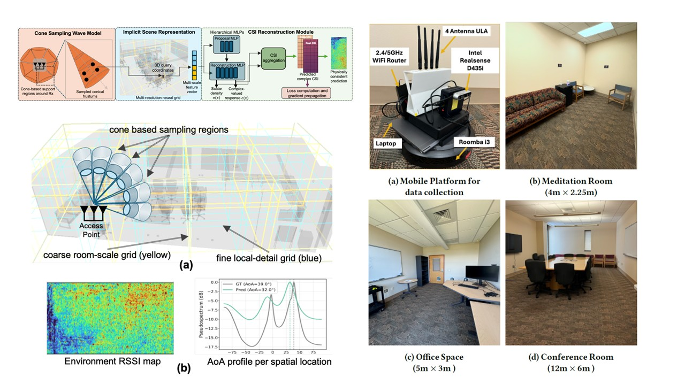

Neural RF fields
WiNeRF
A hardware-constrained neural field framework for actionable wireless channel modeling from sparse commodity WiFi CSI. WiNeRF embeds antenna geometry and phase uncertainty into the model, then reuses the learned field for RSSI coverage, beamforming, and AoA profiling.
Read the EWSN paper